運動会・夏祭り・発表会・卒園式。去年の資料をもとに、AIが今年のおたよりとポスターを下書きします。
先生はスマホで選ぶだけ。園長先生ははんこを押すだけ。
園児のお写真を外部に送ることはありません。
10分の すきま時間で
午睡中や休憩に、自分のスマホで。途中で呼ばれても、つづきから再開できます。
去年のをもとに
白紙から書きません。去年の資料と園の言葉づかいをもとに下書きします。
園長先生は はんこだけ
確認まちのおたよりが並び、よければ赤い「済」を押すだけ。直しもひとことで戻せます。
写真は 外に出さない
お子さんの写真はAIに渡さず、枠に入れるだけ。端末の中に暗号化して保存できます。
先生の画面 ／ おたよりができるまで
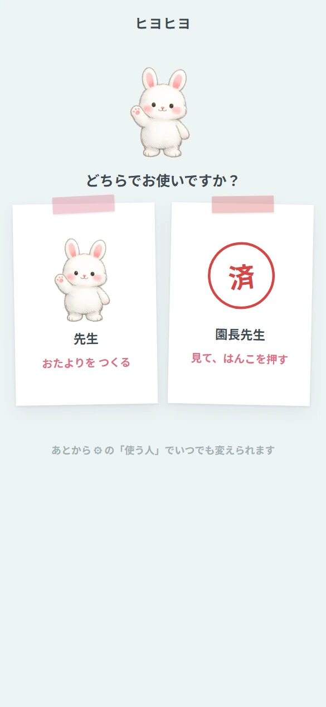
どちらでお使いですか
先生か園長先生かを最初に選びます。あとから切り替えられます。
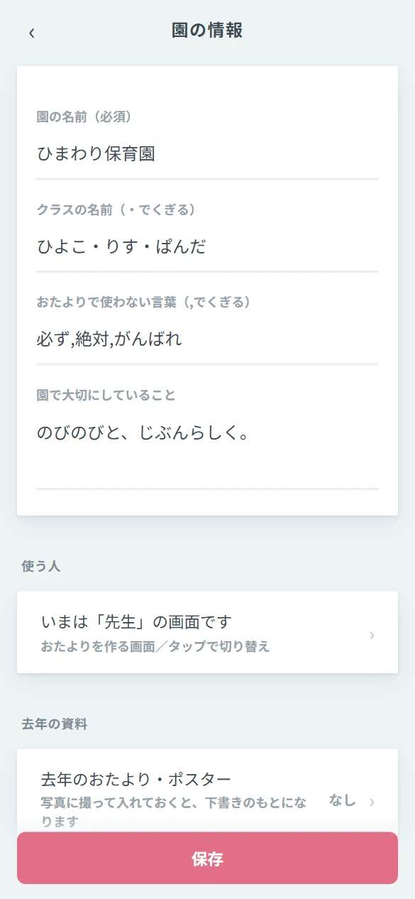
園のことを ひとこと
必要なのは園の名前だけ。クラス名や使わない言葉も登録できます。
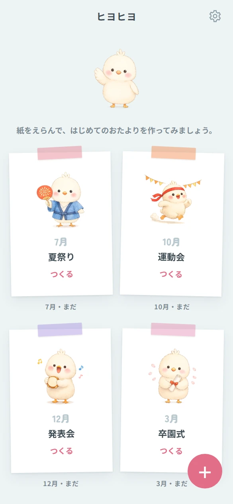
ことしの行事が 壁に並ぶ
7月・10月・12月・3月。園の一年がそのまま並びます。
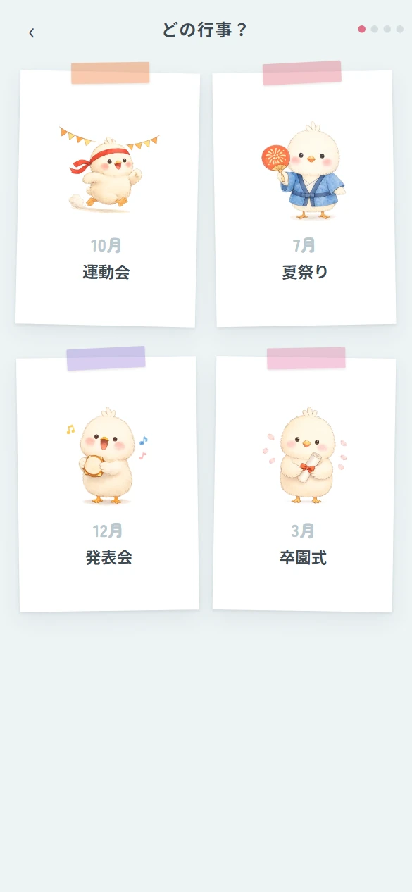
行事を えらぶ
紙を1枚えらぶだけ。文章を書く必要はありません。
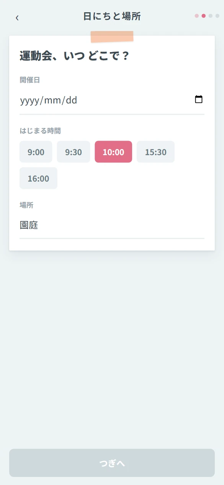
日にちと 場所
日付をえらび、時間はボタンで。場所は園庭のままでもOK。
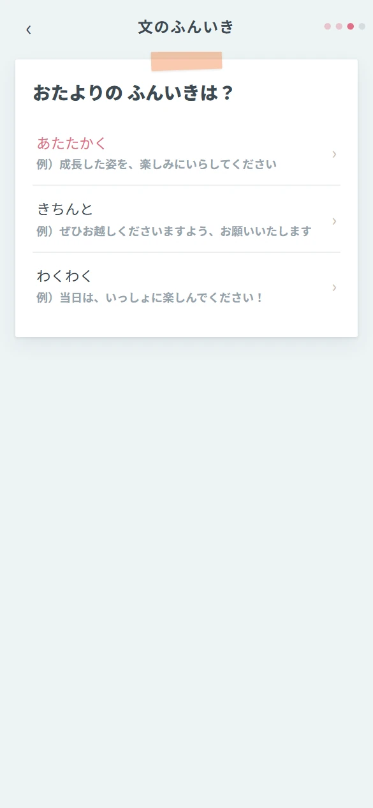
文の ふんいき
あたたかく／きちんと／わくわく。例文を見ながらえらべます。
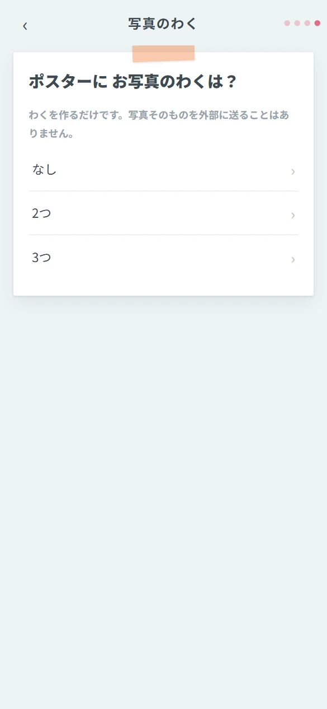
写真の わく
ポスターに入れる枠の数だけ決めます。写真は外部に送りません。
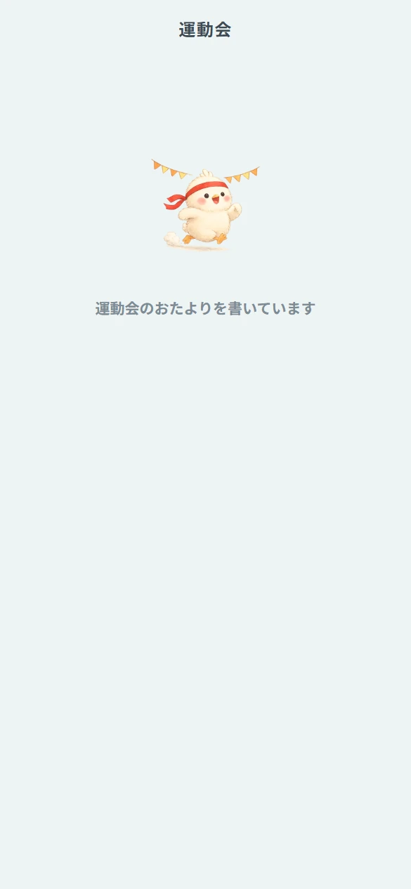
去年のを 見ています
去年の資料 → 今年の日付に直す → ことばの見直し。数十秒で終わります。
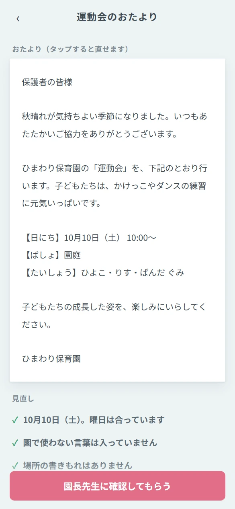
おたよりと ポスター
文はタップで直せます。曜日の整合や園で使わない言葉も自動で見直します。
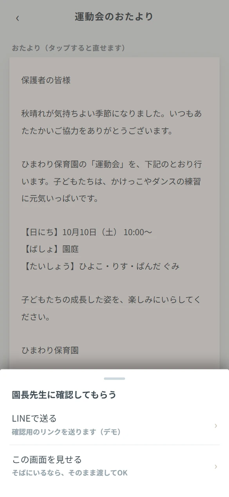
園長先生に 見てもらう
LINEで送るか、そばにいるならスマホをそのまま渡すだけ。
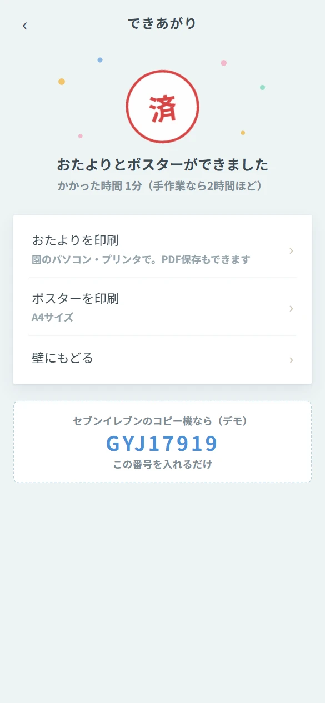
できあがり
かかった時間も記録。園のプリンタでも、コンビニのコピー機でも印刷できます。
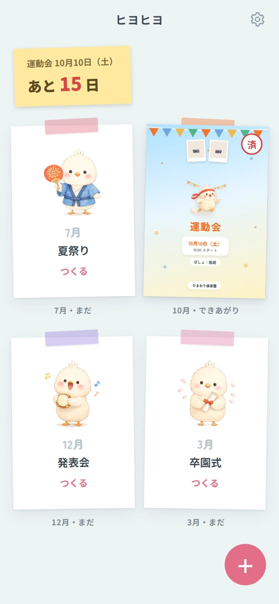
壁が 育っていく
できあがったポスターが壁に貼られ、次の行事までの日数が付箋に出ます。
園長先生の画面 ／ 見て、はんこを押すだけ
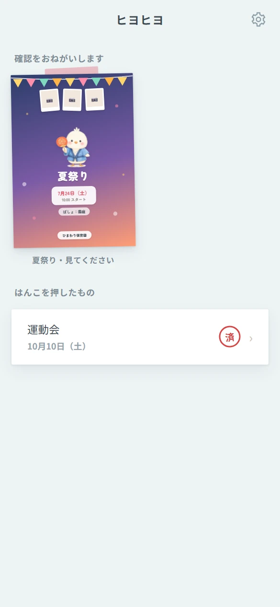
確認まちが 並ぶ
先生から届いたおたよりだけが出ます。作る機能は表示されません。
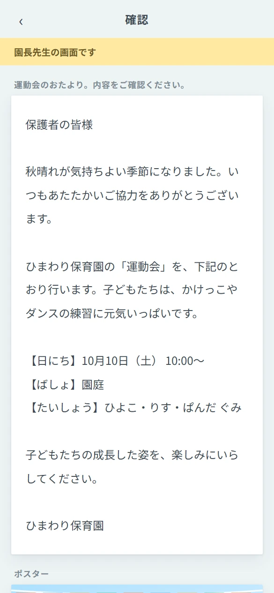
はんこを 押す
大きな文字で内容を確認し、よければ赤い「済」を押すだけ。直しもひとことで戻せます。
そのほかの画面
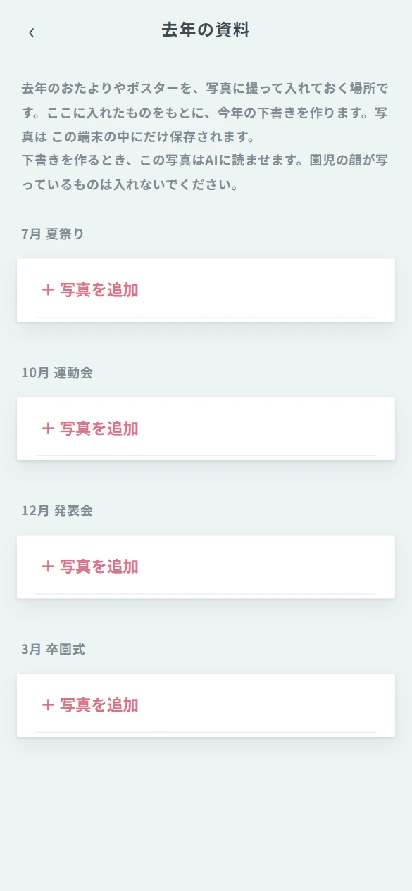
去年の資料
去年のおたよりを写真に撮って入れておくと、下書きのもとになります。

園の情報
園の名前、クラス、使わない言葉、大切にしていること。一度書けば毎回使われます。
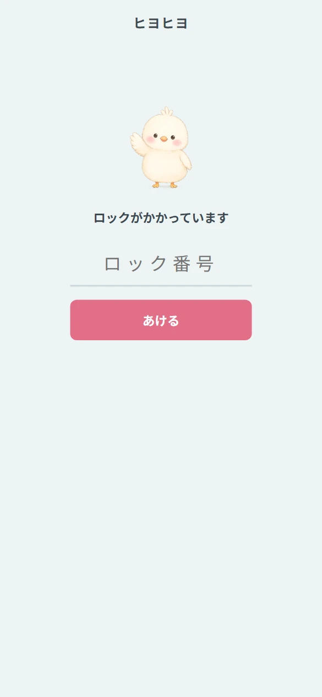
アプリロック
共用のパソコンでも安心。中身を暗号化して保存し、5分さわらないと自動でロックします。
安全のこと
- 園児のお写真は生成AIに渡しません。枠に入れて配置するだけです。
- 入力した内容は、この端末の中にだけ保存されます。外部のサーバーには送りません。
- アプリロックをかけると、保存された中身は番号がないと読めない形（暗号化）になります。
- おたよりは、園長先生が確認して はんこを押すまで完成になりません。
- 日にちと曜日の整合、園で使わない言葉は、下書きのたびに自動で見直します。
このデモについて
- 画面はすべて実際に動いているものです。こちらから実際にさわれます。
- 文章の下書きは、現在は園の情報をもとにした定型の組み立てで動いています。
- コンビニ印刷の番号表示は、画面のイメージです。